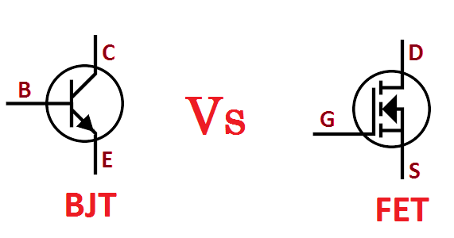

Earlier, the critical and important component of an electronic device was a vacuum tube; it is an electron tube used to control electric current. The vacuum tubes worked but they are bulky, require higher operating voltages, high power consumption, yield lower efficiency, and cathode electron-emitting materials are used up in operation. So, that ended up as heat which shortened the life of the tube itself. To overcome these problems, John Bardeen, Walter Brattain, and William Shockley were invented a transistor at Bell Labs in the year of 1947. This new device was a much more elegant solution to overcome many of the fundamental limitations of vacuum tubes.
The transistor is a semiconductor device that can both conduct and insulate. A transistor can act as a switch and an amplifier. It converts audio waves into electronic waves and resistors, controlling electronic current. Transistors have a very long life, smaller in size, can operate on lower voltage supplies for greater safety, and required no filament current. The first transistor was fabricated with germanium. A transistor performs the same function as a vacuum tube triode but using semiconductor junctions instead of heated electrodes in a vacuum chamber. It is the fundamental building block of modern electronic devices and found everywhere in modern electronic systems.
Transistor Basics:
A transistor is a three-terminal device. Namely,
Base: This is responsible for activating the transistor.
Collector: This is the positive lead.
Emitter: This is the negative lead.
The basic idea behind a transistor is that it lets you control the flow of current through one channel by varying the intensity of a much smaller current that’s flowing through a second channel.
There are two types of transistors is present; they are bipolar junction transistors (BJT), field-effect transistors (FET). A small current is flowing between the base and the emitter; the base terminal can control a larger current flow between the collector and the emitter terminals. For a field-effect transistor, it also has the three terminals, they are gate, source, and drain, and a voltage at the gate can control a current between source and drain. The simple diagrams of BJT and FET are shown in the figure below:
